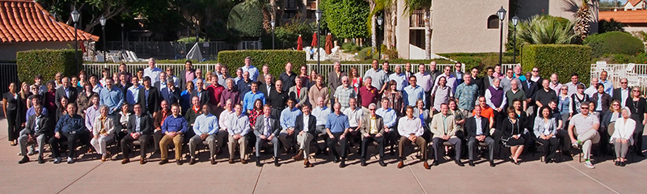

|
Post-NSF funding, this program is now run by VentureWell and called the Pathways in Innovation program. Visit the home of the program at venturewell.org/pathways-in-innovation/.
About the Program
Today’s engineering students want to tackle challenges that have a global impact. They already gain a comprehensive technical education as undergraduates, but they also need a mindset and skill set to turn their ideas into practical solutions for real-world problems.
The Pathways to Innovation Program, created and run by Epicenter, was designed to help institutions transform the experience of their undergraduate engineering students and fully incorporate innovation and entrepreneurship into a range of courses as well as strengthen co- and extra-curricular offerings.
Participating schools assembled a team of faculty and academic leaders to assess their institution’s current offerings, design a unique strategy for change, and lead their peers in a two-year transformation process. Teams received access to models for integrating entrepreneurship into engineering curriculum, custom online resources, guidance from a community of engineering and entrepreneurship faculty, and membership in a national network of schools with similar goals.
During the course of the Epicenter grant, nearly 50 schools took part in the Pathways program.

Pathways '16 Teams
Binghamton University, SUNY
California State University, Northridge
City College of NY, CUNY
Florida A&M University / Florida State University
Grand Valley State University
Louisiana Tech University
Portland State University
South Dakota School of Mines & Technology
South Dakota State University
University of New Hampshire
University of North Alabama
University of South Florida
Western Carolina University
Western Kentucky University

Pathways '15 Teams and Team Leaders
Case Western Reserve University
Lisa Camp and Malcome Cooke
Clemson University
John DesJardins and Matthew Klein
Colorado School of Mines
Mark Mondry
Florida Institute of Technology
Daniel Kirk and Beshoy Morkos
Hampton University
Eric Sheppard and Otsebele Nare
Illinois Institute of Technology
Dietmar Rempfer
James Madison University
S. Keith Holland and Robert Nagel
Loyola University Maryland
Suzanne Keilson and Robert Pond
Missouri University of Science & Technology
Bonnie Bachman and John Lovitt
New York Institute of Technology
Nada Assaf-Anid and Richard Simpson
North Carolina A&T
Bala Ram
Oregon State University
Sundar Atre
Southern Methodist University
Kate Canales
Temple University
David Brookstein and Keya Sadeghipour
Universidad del Turabo
Sandra Pedraza and Alizabeth Sanchez
University of Alabama - Birmingham
Alan Eberhardt and Molly Wasko
University of Delaware
Dan Freeman and John Rabolt
University of Hawaii at Manoa
Peter Crouch and Marcelo Kobayashi
University of Nebraska - Lincoln
David Keck and Ian Cottingham
University of North Dakota
Tim O’Keefe and Brian Tande
University of Puerto Rico - Mayaguez
Ubaldo Córdova-Figueroa and Moraima De Hoyos
University of Texas - Arlington
Raul Fernandez
University of Texas - El Paso
David Novick
Washington State University
Howard Davis
Wichita State University
Steven Skinner and James Steck
Pathways '14 Teams and Team Leaders
California Polytechnic State University, San Luis Obispo
Bob Crockett
The Cooper Union for the Advancement of Science and Art
Yash Risbud
Howard University
Tori Rhoulac Smith
Michigan Technological University
Leonard Bohmann
New Mexico State University
Ed Pines and Patricia Sullivan
Tennessee Technological University
Stephen Canfield and Vahid Motevalli
Texas A&M University
Magda Lagoudas
University of California, Merced
Dan Hirleman and Tom Peterson
University of Massachusetts Lowell
Dan Sullivan
University of Nevada, Las Vegas
Andrew Hardin and Brendan O’Toole
University of Pittsburgh
Larry Shuman and Mary Besterfield-Sacre
University of Wisconsin-Milwaukee
Ilya Avdeev
|
Updates
14 Higher Education Teams Selected for Pathways to Innovation Program
Fourteen new teams have been selected to join the Pathways Program. Read more about the new teams »
Spotlight on Pathways Success in the City of Lights
In October 2015, Epicenter’s Pathways to Innovation Program held a workshop at the University of Nevada, Las Vegas exploring the vital relationship between institutions and their off-campus ecosystems. Read the article »
July Info Session Recording: 2016 Call for Proposals
Did you miss the July info session? Watch the recording here vimeo.com/epicenterusa/
pathwaysinfo
Call for Proposals: Pathways 2016
The Pathways to Innovation Program has opened a call for proposals for a group of up to 14 schools to take part in the third year of the program. The proposal deadline is September 25, 2015. Read the press release and download the Call for Proposals »
January Team Leader Workshop
Leaders from the 25 new Pathways teams gathered at Stanford University January 14-15 for an introduction to the program. View photos from the workshop »
New Pathways Schools
Congratulations to our 25 new Pathways 2015 schools! Read the press release »
NMSU Workshop
Pathways hosted a workshop at New Mexico State University in October 2014. View photos from the NMSU workshop »
Applications
Applications for Pathways 2015 were due October 10, 2014. Read the press release »
Phoenix Meeting
Fifty-four faculty and administrators met in Phoenix February 26-28, 2014, during which each school developed a plan to guide their efforts in the months ahead. View photos from the February 2014 meeting »
New Pathways Schools
The list of Pathways 2014 schools were announced on February 13, 2014. Read the press release »
In the News
WKU one of 14 schools selected for national innovation and entrepreneurship program - December 1, 2015
State selected for Pathways to Innovation Program - December 1, 2015
National Pathways to Innovation Program selects CCNY team - December 1, 2015
Mines Selected for National Engineering Innovation Program - December 1, 2015
NMSU joins initiative to retain STEM students through innovative orientation activities - September 8, 2015
NMSU And Howard University Team Up To Broaden Participation In Engineering - September 3, 2015
Forging new pathways, University of Delaware - March 17, 2015
Engineering to emphasize innovation in curriculum, Temple University - March 11, 2015
UPR impulsa la innovación entre sus alumnos - March 3, 2015
Wichita State aims to help students take lessons from the classroom to the workplace - March 2, 2015
Florida Tech Selected for National Innovation Program - February 19, 2015
RUM selected for NSF’s Pathways to Innovation program - February 17, 2015
Clemson selected for Pathways to Innovation Program - February 10, 2015
Missouri S&T earns spot in Pathways to Innovation program - January 27, 2015
Can engineers be entrepreneurial? James Madison University - January 27, 2015
Loyola selected to participate in NSF-funded Pathways to Innovation Program - January 23, 2015
New program brings together engineering, entrepreneurship efforts - January 20, 2015
NYIT Selected to Participate in Epicenter’s Pathways to Innovation Program - January 20, 2015
UAB one of 25 U.S. schools added in 2015 to innovation program for engineering students - January 20, 2015
Faculty selected for innovation, entrepreneurship project - January 20, 2015
Six picked for innovation, entrepreneurship project - January 18, 2015
UTEP joins select group of universities committed to advancing education in innovation - January 17, 2015
SMU Selected for NSF-Funded Pathways to Innovation Program - January 17, 2015
UTEP One of 25 Institutions Selected for Pathways to Innovation Program - January 16, 2015
Wichita State among 25 institutions picked for national innovation program - January 16, 2015
HU selected for Pathways to Innovation Program by the NSF-funded National Center - January 16, 2015
UAB among 25 U.S. institutions selected for NSF-funded Pathways to Innovation Program - January 16, 2015
Mines selected for Pathways to Innovation Program by NSF-funded Epicenter - January 16, 2015
NMSU College of Engineering associate dean selected for student outreach award - October 29, 2014
NMSU grant aims to boost minority transfer, retention in engineering - October 26, 2014
Aggies accept 48-hour invention challenge - August 4, 2014
Cooper Union Selected in First Cohort for NSF-funded Entrepreneurship Effort - April 29, 2014
NMSU selected to take part in NSF Pathways to Innovation - March 20, 2014
UWM to participate in national entrepreneurial program for engineers - March 18, 2014
Texas A&M selected to participate in Epicenter’s Pathways to Innovation program - March 6, 2014
UC Merced joins other campuses to encourage innovation - March 4, 2014
UC Merced Chosen as Pioneer for Entrepreneurial Program - Feb. 24, 2014
Howard Joins Two National Programs to Promote Innovation and Entrepreneurship - Feb. 21, 2014
TTU selected to join national leaders in engineering education - Feb. 18, 2014
|